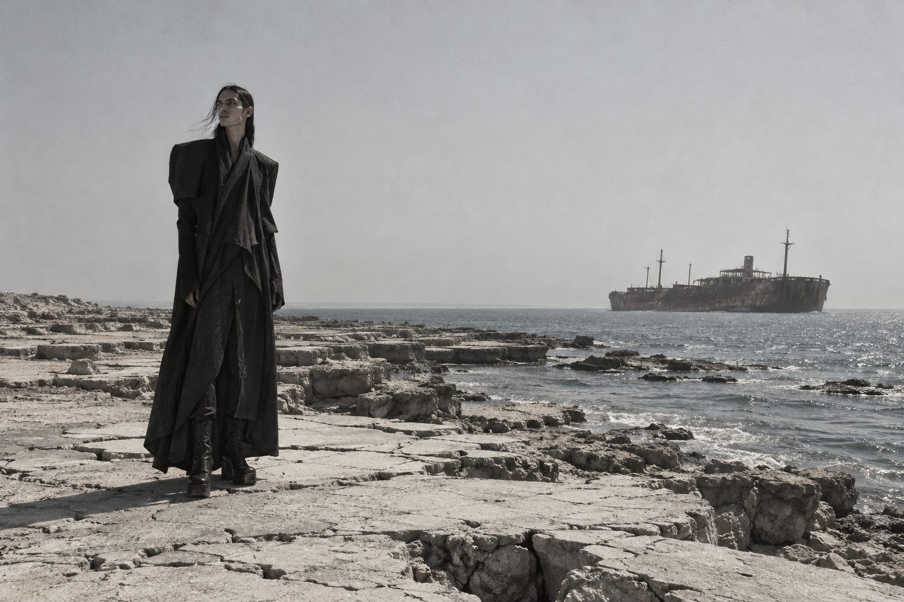
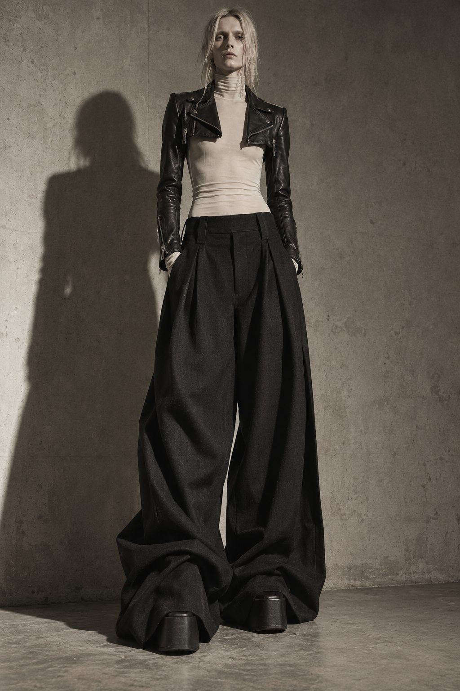
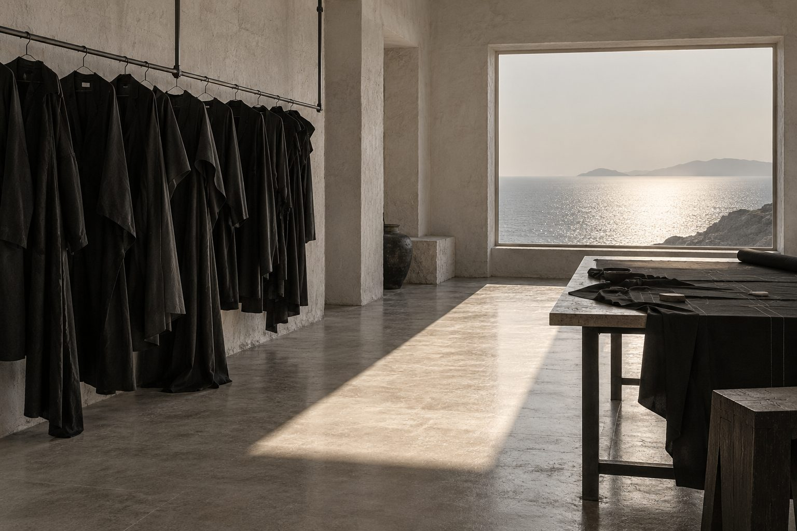

Thirty-four looks walked across the limestone shelf below the Greek Ship, wrecked in 1966 and left exactly where it stopped. Guests stood. There were no seats and no explanation.
The collection begins with a jacket cropped to the collarbone and ends with a coat that stands on its own. Between them the house asks one question about proportion and declines to answer it.
«کوچولو یعنی کافی.» Kuchulu means enough.
“I left with more questions than I arrived with.”
“The trousers were longer than my flight.”
“Mashallah.”

Jacket length 31 cm Trouser hem 140 cmDoodool is not a size.
It is a posture.
Founded on Kish Island in 1357 by a man who refused to explain the name. He still refuses.
Every garment is cut, draped and finished by hand, and kept. We do not sell. We allow.
